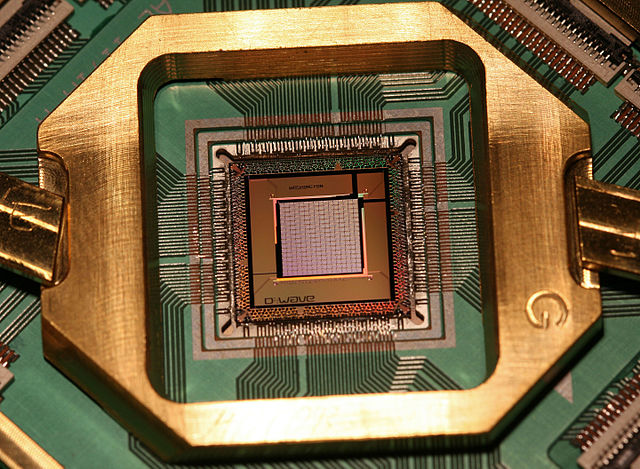

QUBO
Definition
QUBO stands for Quadratic Unconstrained Binary Optimization.
So every QUBO model has the following characteristics:
- Its objective function is at most quadratic
- There are no constraints
- All variables are binary (0 or 1)
We can represent a QUBO as follows.
\[\begin{array}{rl} \min & \mathbf{x}' Q\,\mathbf{x} \\ \mathrm{s.t.} & \mathbf{x} \in \mathbb{B}^{n} \end{array}\]
OK, but why QUBO?
QUBOs are suited for representing non-convex global optimization problems. With that said, the significant advances in computing systems and algorithms specialized for sampling QUBOs have contributed to their popularity.
Some of the paradigms that stand out for running QUBOs are quantum gate-based optimization algorithms (QAOA and VQE), quantum annealers and hardware-accelerated platforms (Coherent Ising Machines and Simulated Bifurcation Machines).

ToQUBO.isqubo — Functionisqubo(model::MOI.ModelLike)Tells if a given model is ready to be interpreted as a QUBO model.
For it to be true, a few conditions must be met:
- All variables must be binary (
MOI.VariableIndex ∈ MOI.ZeroOne) - No other constraints are allowed
- The objective function must be of type
MOI.ScalarQuadraticFunction,MOI.ScalarAffineFunctionorMOI.VariableIndex - The objective sense must be either
MOI.MIN_SENSEorMOI.MAX_SENSE
ToQUBO.toqubo — Functiontoqubo(
[T=Float64,]
source::MOI.ModelLike,
::AbstractArchitecture;
optimizer::Union{Nothing, Type{<:MOI.AbstractOptimizer}} = nothing
)Low-level interface to create a ::VirtualModel{T} from ::MOI.ModelLike instance. If provided, an ::MOI.AbstractOptimizer is attached to the model.
ToQUBO.toqubo! — Functiontoqubo!(model::VirtualModel{T}, ::AbstractArchitecture) where {T}